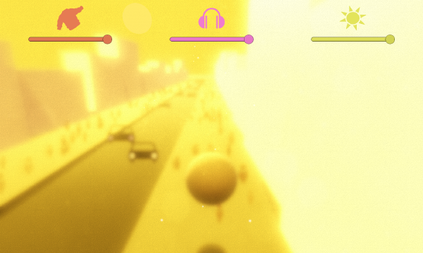

I made Autumn Light in late 2018, for the Meditations project that ran throughout 2019. Download and play the game on itch.io.
The game was inspired by a day in October, when I was walking home from work, thinking about the future. The evening was exactly the temperature where you feel neither cold or warm, and my music drowned out any external noise, leading to a very dream-like atmosphere. The text below is what I wrote on that day as I was walking along.
It's an unusually warm evening for October.
The warmth from my layers of jumper, coat and the lack of breeze makes me feel like I'm inside, not outside.
I haven't listened to music much while walking recently, but now with my earphones in the street noises fade away and I retreat slightly from reality.
The warm air with golden autumn light glares against my vision, pushing me further away from reality and it feels like a dream.
I zone out as people fly by, blurs of office shirts and Halloween evening wear.
The music seeps through me, emanating beautifully and I stare into dreamspace reality.
My thoughts wander over my future, and where I might go, what I might do and who I'll miss when I go there.
I view my fears and try to see them from the outside, not the inside.
The fear of the unknown in a known that I long for.
The beginning and the end merge and there's a melding of dream and reality.
I look up and see a thousand tiny flies, dancing and glowing in the autumn sunset. I never would have seen them without that illumination.